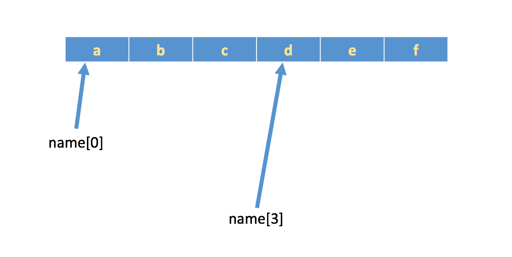

字符串输出
demo
name = 'xiaoming'
position = '讲师'
address = '北京市昌平区建材城西路金燕龙办公楼1层'
print('--------------------------------------------------')
print("姓名：%s"%name)
print("职位：%s"%position)
print("公司地址：%s"%address)
print('--------------------------------------------------')
结果:
--------------------------------------------------
姓名： xiaoming
职位： 讲师
公司地址： 北京市昌平区建材城西路金燕龙办公楼1层
--------------------------------------------------
字符串输入
之前在学习input的时候，通过它能够完成从键盘获取数据，然后保存到指定的变量中；
注意：input获取的数据，都以字符串的方式进行保存，即使输入的是数字，那么也是以字符串方式保存
demo:
userName = input('请输入用户名:')
print("用户名为：%s"%userName)
password = input('请输入密码:')
print("密码为：%s"%password)
结果：（根据输入的不同结果也不同）
请输入用户名:dongGe
用户名为： dongGe
请输入密码:haohaoxuexitiantianxiangshang
密码为： haohaoxuexitiantianxiangshang
下标和切片
下标索引
所谓“下标”，就是编号，就好比超市中的存储柜的编号，通过这个编号就能找到相应的存储空间
列表与元组支持下标索引好理解，字符串实际上就是字符的数组，所以也支持下标索引。
如果有字符串:name = 'abcdef'，在内存中的实际存储如下:

如果想取出部分字符，那么可以通过下标的方法，（注意python中下标从 0 开始）
>>> name = 'abcdef'
>>> name[0]
a
>>> name[1]
b
>>> name[2]
c
切片
切片是指对操作的对象截取其中一部分的操作。字符串、列表、元组都支持切片操作。
切片的语法：[起始:结束:步长]
注意：选取的区间属于左闭右开型，即从"起始"位开始，到"结束"位的前一位结束（不包含结束位本身)。
我们以字符串为例讲解。
如果取出一部分，则可以在中括号[]中，使用
>>> a = "abcdef"
>>> a[:3]
'abc'
>>> a[::2]
'ace'
>>> a[5:1:2]
''
>>> a[1:5:2]
'bd'
>>> a[::-2]
'fdb'
>>> a[5:1:-2]
'fd'
想一想
- 给定一个字符串aStr, 请反转字符串
字符串常见操作
str = "My Name is Dinson"
# print(str.index("n")) # 13 索引字符 无该字符则报错
# print(str.rindex("n")) # 16 从右边开始索引字符 无该字符则报错
# print(str.find("y")) # 1 索引字符 无该字符则返回-1
# print(str.rfind("n")) # 16 从右边开始索引字符 无该字符则返回-1
# print(str.count("n")) # 2 字符出现的个数
# print("dinson".capitalize()) # Dinson 首字母大写
# print(str.center(24, "-")) # ---My Name is Dinson----
# print(str.ljust(24, "-")) # My Name is Dinson-------
# print(str.rjust(24, "-")) # -------My Name is Dinson
# print(str.zfill(24)) # 0000000My Name is Dinson
# print(str.endswith("on")) # True 判断是否以该字符结束
# print(str.startswith("my")) # False 判断是否以该字符开始
# print("a\ta".expandtabs(10)) # a a
# print("_".join(["a", "b", "c", "d"])) # a_b_c_d
# print(str.swapcase()) # mY nAME IS dINSON 大小写互换
# print(str.lower()) # my name is dinson
# print(str.upper()) # MY NAME IS DINSON
# print(str.replace("Dinson", "Mike")) # My Name is Mike
# print("\n Dinson \n".strip()) # Dinson 去除左右空格和换行
# print("\n Dinson \n".lstrip()) # Dinson \n 去除左边空格和换行
# print("\n Dinson \n".rstrip()) # \n Dinson 去除右边空格和换行
# print("aaaaa".split("a", 2)) # ['', '', 'aaa'] 从左切割
# print("aaaaa".rsplit("a", 2)) # ['aaa', '', ''] 从右切割
# print("Dinson".partition("n")) # ('Di', 'n', 'son') 切割成固定三个元组
# print("Dinson".rpartition("n")) # ('Dinso', 'n', '')从右边切割成固定三个元组
# print("a\nb".splitlines()) # ['a', 'b'] 根据不用系统换行符分割
# print("my name is dinson".title()) # My Name Is Dinson
# p1 = str.maketrans("abcdefghijklmnopqrstuvwxyz MND", "9352401867peiwqcmzoshlmabv$*&^")
# p2 = str.maketrans("9352401867peiwqcmzoshlmabv$*&^", "abcdefghijklmnopqrstuvwxyz MND")
# print(str.translate(p1)) # *b$&9i4$6o$^6woqw
# print(str.translate(p1).translate(p2)) # My Name is Dinson
# print("name:{name},age:{age}".format(name="Dinson", age=18)) # name:Dinson,age:18
# print("name:{name},age:{age}".format_map({"name": "Dinson", "age": 18})) # name:Dinson,age:18
# print("123".isdecimal()) # True 是否为阿拉伯数字(非负整数)
# print("123".isalnum()) # True 是否为阿拉伯数字(非负整数)
# print("123".isnumeric()) # True 是否为阿拉伯数字(非负整数)
# print("123".isdigit()) # True 是否为阿拉伯数字(非负整数)
# print("abcdABCD".isalpha()) # True 是否为字母
# print("_1a中国".isidentifier()) # True 是否为合法标识符
# print("abcd".islower()) # True 是否全部为小写
# print("ABCD".isupper()) # True 是否全部为大写
# print("My Name Is Dinson".istitle()) # True 是否为标题格式
# print("\t".isspace()) # True 是否全部为空格
# print(str.isprintable()) # True tty file,drive file不可打印